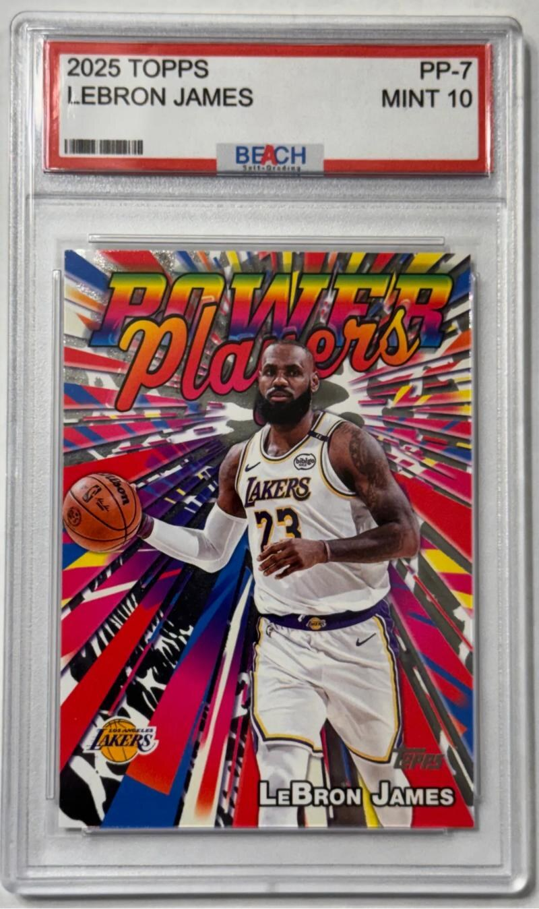

Beach Self Grading
Free tool for making your own display tags for trading cards and collectibles

Has releasestrading cardstag generatorprintable templatesCodePenWordPress
2 updates from Oct 2026 to Oct 2026
Mediums
Code spectrum
Hardware 0, System / network 0, Data / tools 2, Web / platform 4
Timeline
BeachTag
How Beach Self-Grading works
Beach Self-Grading (beachselfgrading.com) is a free site for making display tags for trading cards and other collectibles. The owner judges the condition and writes the tag instead of sending the item to a grading company, so the item never leaves their hands. The site states that the tags are not a replacement for professional grading.
The tag generator runs in the browser as an embedded CodePen. The year and set, the player or item name, the card number and the condition are typed into fields, a frame color is picked, and the finished tag downloads as a JPG with the Beach Self-Grading badge and a barcode strip. Nothing needs an account.
The printable templates page has free Word files that fold into five tags each, with red, black, blue, yellow and green backs, plus two-tone versions for subscribers. A gallery shows finished tags on sports and Pokémon cards, and visitors can submit their own. The site runs on WordPress.com.